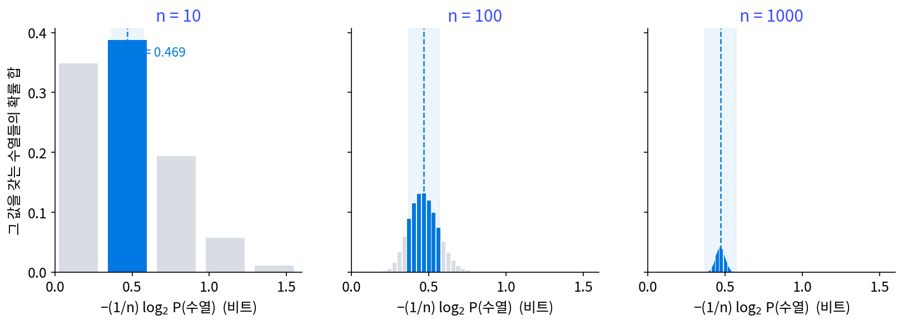
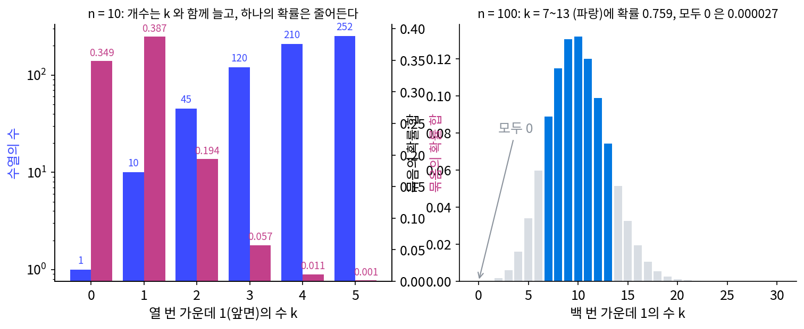
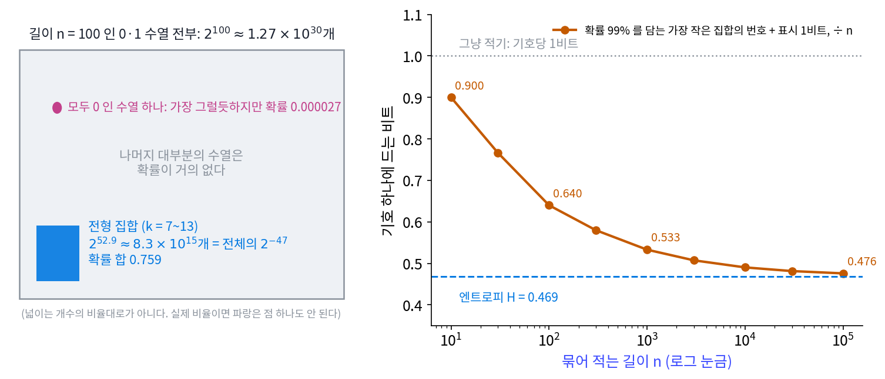
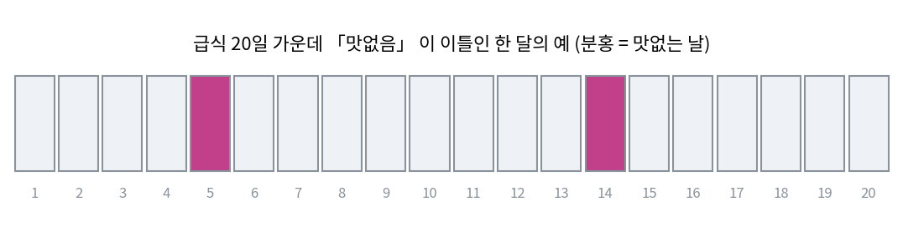
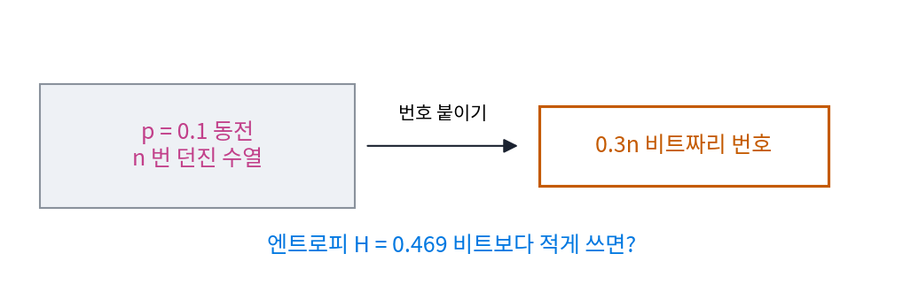

섀넌의 두 정리: 짧게 적기와 틀리지 않게 보내기
이 장의 물음
언어 모델의 학습 곡선을 오래 지켜본 사람은 손실이 어느 값 근처에서 더 내려가지 않는 것을 본다. 모델을 키워도, 자료를 늘려도 줄어드는 정도가 점점 작아진다. 글 자체에 아무도 미리 맞힐 수 없는 불확실성이 있다면, 그 불확실성만큼의 비트는 어떤 압축기도 덜어 낼 수 없을 것이다. 엔트로피가 평균 코드 길이의 하한이라는 것까지는 알지만, 그것은 글자 하나하나에 코드를 줄 때의 이야기였다. 아주 긴 글을 한꺼번에 영리하게 묶어 적어도 그 하한을 넘지 못할까, 그리고 넘지 못한다면 하한에는 실제로 얼마나 가까이 갈 수 있을까?
같은 고민이 반대 방향에서도 생긴다. 체크포인트 파일을 다른 서버로 옮기거나 디스크에 오래 두면, 아주 드물게 비트 하나가 뒤집힌다. 학습 자료의 라벨도 사람이 붙이다 보면 몇 퍼센트는 틀린다. 줄인 파일은 비트 하나만 틀려도 그 뒤가 모두 망가지니, 보낼 때는 다시 무언가를 덧붙여야 한다. 그런데 무엇을 얼마나 덧붙여야 할까? 틀릴 확률을 0에 가깝게 하려면 같은 것을 끝없이 되풀이해 보내는 수밖에 없을까?
- 아주 길게 묶어 적으면 기호 하나에 드는 비트는 어디까지 내려갈까? 엔트로피보다 짧게 적으려고 하면 무엇이 깨질까?
- 노이즈가 비트를 뒤집는 선으로는 기호 하나에 몇 비트의 정보를 실어 보낼 수 있을까?
- 같은 것을 여러 번 보내지 않고도 틀릴 확률을 0에 가깝게 할 수 있을까? 된다면 얼마나 빨리 보낼 때까지일까?
- 입력을 보고도 라벨이 정해지지 않는 자료에서, 어떤 분류기도 넘을 수 없는 정확도는 얼마일까?
원천 코딩 정리: 길게 묶으면 엔트로피만큼만 든다
맑은 날이 90%인 도시의 날씨를 날마다 보낼 때, 하루씩 허프만 코드로 보내면 하루 1비트가 들지만 이틀, 사흘씩 묶으면 하루 0.645비트, 0.533비트로 줄어 엔트로피 0.469비트에 다가간다는 것은 이미 보았다. 정수 길이로 맞추느라 버리는 비트가 묶음 하나에 1비트를 넘지 않으니, 묶음이 길어질수록 하루에 버리는 비트는 줄어든다. 여기서 아직 궁금한 것은 엔트로피보다 짧게 적는 방법이 정말로 하나도 없는가이다. 그리고 날마다 비율이 같은 원천이라면, 묶음이 길어질 때 수열 자체에 무슨 일이 생기길래 엔트로피만큼의 비트로 번호를 붙일 수 있을까?
역사: 수열을 두 묶음으로 나누기
섀넌(Claude Shannon)의 1948년 논문 「통신의 수학적 이론(A Mathematical Theory of Communication)」은 벨 연구소의 사내 학술지 『Bell System Technical Journal』 27권에 7월호와 10월호 두 번에 나뉘어 실렸다. 앞부분은 노이즈 없는 통신, 뒷부분은 노이즈가 있는 통신을 다룬다. 앞부분에서 섀넌은 엔트로피 H를 정의한 뒤, 엔트로피가 실제로 「기호 하나를 적는 데 드는 비트」라는 것을 보여야 했다. 허프만 코드가 나오기 네 해 전이라, 가장 짧은 코드를 직접 만들어 보이는 방법은 없었다.
섀넌은 코드를 만드는 대신 수열의 수를 세는 방법을 골랐는데, 논문의 정리 3은 길이 N인 수열들이 N이 충분히 크면 두 묶음으로 나뉜다고 적는다. 첫째 묶음은 확률을 모두 더해도 아주 작은 수열들이고, 둘째 묶음의 수열은 하나하나의 확률이 거의 2^(−NH)로 같다. 섀넌은 이를 「H는 대략, 전형적인 긴 수열의 확률의 역수에 로그를 취해 기호 수로 나눈 값이다」라고 풀어 썼다. 확률이 거의 같은 수열들이 확률을 거의 모두 가져가니, 그 수열들의 개수는 2^(NH)쯤이 될 수밖에 없다.

긴 수열의 확률이 거의 2^(−NH)로 고르게 모이는 성질을 섀넌보다 넓은 원천에서 수학적으로 다시 정리한 사람은 1953년 매크밀런(Brockway McMillan)이다. 그는 『Annals of Mathematical Statistics』에 「정보 이론의 기본 정리들(The Basic Theorems of Information Theory)」을 실어 섀넌의 논증을 수학자의 언어로 풀고 고쳤다. 그래서 오늘날 교과서는 긴 수열의 확률이 고르게 모이는 성질을 섀넌–매크밀런 정리, 또는 「점근 등분배 성질」이라 부른다.

가장 짧은 코드를 만들지도 않고 「H비트면 된다」를 보였다는 게 신기해요. 지금이면 허프만 코드를 짜서 돌려 보면 끝일 텐데요.

허프만 코드는 1952년에 나와요. 1948년의 섀넌에게는 「이 코드가 가장 짧다」를 보일 도구가 없었어요. 그런데 하한을 보이는 데는 코드가 필요 없었죠. 왜일까요?

음, 번호를 붙여야 할 수열이 2^(NH)개쯤이면… 번호는 NH비트보다 짧을 수가 없겠네요. 서로 다른 수열에 같은 번호를 줄 수는 없으니까요.
그래요. 개수를 세는 것만으로 위와 아래가 함께 정해졌어요. 다만 「확률이 거의 같다」는 말을 엄밀하게 만드는 데는 큰 수의 법칙을 원천에 맞게 다시 세워야 했고, 그 일이 다섯 해 뒤 매크밀런의 논문까지 이어졌어요.

그럼 동전으로 직접 세어 볼 수 있겠네요. n을 10, 100으로 키우면서 그 묶음에 수열이 몇 개 들어가는지요.
동전 열 번, 백 번
앞면을 1, 뒷면을 0으로 적고, 앞면 확률이 p = 0.1인 동전을 n번 던진 수열을 적어 보내는 경우를 보자. 1이 k개 든 수열은 순서가 어떻든 확률이 0.1^k × 0.9^(n − k)로 같다. 그러니 수열을 1의 개수로 묶어 「몇 개의 수열이 있고, 하나의 확률이 얼마인가」를 세면 전체가 보인다.
n = 10이면 모두 0인 수열이 확률 0.349로 하나뿐이고, 1이 하나인 수열은 확률이 0.0387로 열 개, 1이 둘인 수열은 0.0043으로 45개다. 하나의 확률은 1이 늘수록 9분의 1씩 줄지만 개수는 늘어나므로, 묶음의 확률 합은 1이 하나인 묶음(0.387)에서 가장 크다. 모두 0인 수열 하나는 가장 그럴듯하지만, 1이 하나 든 수열들이 함께 가져가는 확률이 더 크다.

n = 100이 되면 차이가 커진다. 모두 0인 수열의 확률은 0.9^100 = 0.000027로 떨어지고, 확률은 1이 7~13개인 수열들에 0.759가 모인다. 그 수열 하나하나의 확률은 −(1/n) log₂ P가 0.37~0.57비트, 곧 2^(−37)에서 2^(−57) 사이로 엔트로피 0.469비트 근처에 있다. 그 수열들의 개수는 2^52.9 ≈ 8.3 × 10¹⁵개인데, 0과 1로 만들 수 있는 길이 100의 수열 2^100개 가운데 2^(−47)에 지나지 않는다. n = 1000이면 같은 기준(엔트로피에서 0.1비트 안)의 수열들이 확률 0.999를 가져간다.
이렇게 −(1/n) log₂ P(수열)이 엔트로피에서 δ 안에 드는 수열의 모임을 전형 집합 (확률이 거의 다 모이는 수열의 모임, typical set)이라 한다. 길이가 길어지면 전형 집합이 확률을 거의 모두 가져가고, 그 안의 수열은 확률이 거의 같으므로 개수는 2^(nH) 근처가 된다.
전형 집합의 수열에만 번호를 붙이면 약 nH비트면 된다. 받는 사람에게 「전형 집합 안이다/밖이다」를 알리는 표시 1비트를 앞에 붙이고, 드물게 밖의 수열이 나오면 표시 뒤에 수열을 그냥 n비트로 적는다. 확률이 큰 수열부터 담아 확률 0.99를 넘는 가장 작은 모임을 만들고 그 번호의 비트를 재면, 기호 하나에 n = 10에서 0.900비트, 100에서 0.640비트, 1000에서 0.533비트, 10만에서 0.476비트로 엔트로피 0.469비트에 다가간다.

거꾸로 기호 하나에 H보다 적은 비트를 쓰면, 붙일 수 있는 번호가 2^(n(H − 무엇))개로 전형 집합보다 지수만큼 적다. 번호를 받지 못한 수열은 되살릴 수 없으니, 길이가 길어질수록 되살리는 데 실패할 확률이 1로 간다(얼마나 빨리 가는지는 아래 문제 2에서 잰다). 이 두 방향을 합친 것이 원천 코딩 정리 (무손실로 적는 데 드는 비트의 한계, source coding theorem)다. 끊어 읽히는 코드로 n개씩 묶어 적는 경우로 적으면 다음과 같다.
왼쪽 부등식이 「짧게는 못 적는다」, 오른쪽이 「묶으면 다가간다」이고, 산술 코딩처럼 글 전체에 코드 하나를 주는 방법도 같은 하한 위에 있다. 원천이 기호마다 같은 비율로 상관없이 나온다는 가정을 뺀 경우, 예를 들어 앞 글자에 따라 다음 글자의 확률이 바뀌는 글에서는 H 자리에 앞을 알고 나서 남는 엔트로피의 극한(엔트로피 레이트)이 온다.
모두 0인 수열처럼 가장 그럴듯한 수열 하나가 전형 집합 밖에 있다는 것은 고차원 확률분포에서도 똑같이 나타난다. 가장 진한 점 근처에는 샘플이 거의 없고 샘플은 얇은 껍질에 모인다는 이야기다.
ML에서: 손실이 더 내려가지 않는 값
언어 모델의 시험 손실은 글을 토큰 하나에 몇 nat으로 적는지를 잰다. 원천 코딩 정리에 따르면 어떤 모델도 그 글을 낸 원천의 엔트로피 레이트보다 짧게 평균을 낼 수 없다. 모델 크기와 자료 양에 따른 손실을 맞춘 식들(스케일링 법칙)에 「아무리 키워도 남는 손실」을 뜻하는 상수 항이 들어 있는 것도 이 하한을 식에 둔 것으로 읽을 수 있다. 다만 그 상수는 곡선을 맞춰 얻은 값이라, 글의 엔트로피를 직접 잰 값은 아니다.
전형 집합은 생성 모델이 내는 샘플을 볼 때도 쓰인다. 토큰마다 엔트로피가 일정한 모델이 문장을 만들면, 샘플 문장의 로그 확률은 대부분 비슷한 값 근처에 모이고, 서로 다른 문장의 수는 2^(길이 × 엔트로피)쯤이다. 서로 다른 문장의 수가 생성한 문장 수보다 아주 크면 같은 문장이 두 번 나오는 일이 드물고, 작으면 흔하다. 아래 문제 3에서 직접 센다.
문제 1. 급식이 맛없는 날
학교 급식이 한 달 20일 가운데 날마다 10% 확률로 「맛없음」이다(날끼리는 서로 상관없다고 하자). 한 달 기록을 날마다 「맛있음/맛없음」으로 적어 친구에게 보낸다. (가) 그냥 하루 1비트씩 적으면 몇 비트인가? (나) 「맛없는 날이 한두 날이나 사흘인 달」에만 번호를 붙이면 몇 가지이고 번호는 몇 비트인가? 그런 달은 얼마나 흔한가? (다) 20 × H는 몇 비트이고, (나)의 비트와 어떻게 다른가?

(가)는 20비트요. (나)는 맛없는 날이 하루인 달이 20가지, 이틀이 C(20, 2) = 190가지, 사흘이 C(20, 3) = 1,140가지라 모두 1,350가지예요. 2^10 = 1,024보다 크고 2^11 = 2,048보다 작으니까 번호는 11비트요.
그런 달은 얼마나 흔하죠?
하루인 달이 0.270, 이틀 0.285, 사흘 0.190이라 더하면 0.746이에요. 넉 달 가운데 세 달은 11비트로 보낼 수 있네요. 20비트의 절반 정도요.

(다)는 H(0.1) = 0.469니까 20 × 0.469 = 9.38비트예요. 11비트보다 조금 짧고요.

그런데 맛없는 날이 하나도 없는 달은 확률이 0.122나 되잖아요. 가장 흔한 달인데 번호 목록에서 뺐어요?
하나도 없는 달은 몇 가지죠?
한 가지요. 아, 하나뿐이니까 번호를 하나 더 붙여도 11비트 그대로네요. 넣으면 0.867까지 담겨요. 개수로 따지면 아무것도 아닌데 확률은 꽤 크고요.

결국 번호 비트를 정하는 건 개수고, 얼마나 자주 그 번호로 보낼 수 있는지를 정하는 건 확률이구나. 20일은 짧아서 9.38비트까지는 못 가고 11비트에서 멈춘 거고.
문제 2. 엔트로피보다 짧게 줄이면
앞면 확률 0.1인 동전을 n번 던진 수열을, 기호 하나에 0.3비트(엔트로피 0.469비트보다 적게)만 써서 적기로 했다. 번호는 2^(0.3n)개뿐이니, 확률이 큰 수열부터 번호를 준다. (가) n = 10이면 번호가 몇 개이고, 맞게 되살릴 수 있는 확률은 얼마인가? (나) n = 100, 1000이면 그 확률은 어떻게 되는가? (다) 「조금 모자라게 적으면 조금 틀린다」는 생각은 맞는가?

(가)는 0.3 × 10 = 3비트라 번호가 8개예요. 확률이 가장 큰 모두 0인 수열에 하나, 그다음 1이 하나인 수열 열 개 가운데 일곱 개에 줘요. 0.349 + 7 × 0.0387 = 0.62예요.
열 번에 여섯 번은 되살리네. 길게 묶으면 더 나아지겠지. 묶을수록 엔트로피에 가까워졌으니까.
n = 100이면 번호는 몇 개고, 확률이 큰 수열부터 몇 개를 덮을까요?
2^30 ≈ 10억 개요. 1이 0~4개인 수열이 약 400만 개, 1이 5개인 수열이 7,500만 개쯤이고… 스크립트로 확률을 더해 보니 0.107이에요. 어, 열 번에 한 번밖에 못 되살려요.

n = 1000이면 1.1 × 10^(−7), 1만이면 2.5 × 10^(−64)예요. 묶을수록 나빠지네요. 길게 묶으면 좋아진다는 건 엔트로피보다 많이 쓸 때 이야기였어요.
왜 이렇게 빨리 나빠질까요?

음, 전형 집합에 든 수열 하나의 확률부터 보면, 2^(−0.469n)쯤이잖아요. 번호 2^(0.3n)개를 다 전형 집합에 줘도 담는 확률이 2^(0.3n) × 2^(−0.469n) = 2^(−0.169n)이니까, n이 늘 때마다 지수로 줄어요.
그래요. 그래서 (다)의 「조금 모자라게 적으면 조금 틀린다」는 길이가 짧을 때만 맞아요. 길게 묶으면 엔트로피보다 많이 쓰는 한 실패 확률은 0으로, 적게 쓰는 한 1로 가요. 엔트로피가 「0으로 가는 실패」와 「1로 가는 실패」를 가르는 문턱이에요.
문제 3. 생성한 문장은 얼마나 겹치나
토큰 20개짜리 문장을 만드는 언어 모델이 토큰마다 엔트로피 1.5비트로 다음 토큰을 고른다(토큰끼리는 서로 상관없다고 단순하게 두자). (가) 전형적인 문장 하나의 확률과 전형적인 문장의 수는 얼마쯤인가? (나) 문장을 1만 개, 10만 개, 100만 개 뽑으면 똑같은 문장이 나오는 쌍은 평균 몇 개쯤인가? (다) 같은 모델을 토큰 40개짜리로 쓰면 어떻게 되는가?
(가)는 20 × 1.5 = 30비트니까 전형적인 문장 하나가 2^(−30), 수는 2^30 ≈ 10.7억 개요.
(나)는 어떻게 셀까요?
일단 문장 두 개가 같을 확률부터요. 둘 다 전형 집합에서 나오고 그 안이 고르다고 보면 2^(−30)이에요. 1만 개면 쌍이 1만 × 9,999 ÷ 2 ≈ 5,000만 개니까 5,000만 × 2^(−30) ≈ 0.05쌍이요. 10만 개면 4.7쌍, 100만 개면 466쌍이에요.

생일 문제랑 같은 계산이네. 10억 가지 가운데서 뽑는데, 4만 6천 개쯤 뽑으면 벌써 겹치는 쌍이 하나쯤 나와.
(다)는요?
40 × 1.5 = 60비트라 2^60 ≈ 1.2 × 10^18가지예요. 100만 개를 뽑아도 쌍이 5 × 10^11개라 겹칠 기댓값이 4 × 10^(−7)쯤이에요. 문장을 두 배로 늘렸을 뿐인데 겹침이 2^30분의 1, 10억 분의 1쯤으로 줄었네요.
그럼 생성 결과에 똑같은 문장이 수백 개 나오면, 토큰당 엔트로피가 생각보다 훨씬 낮다는 신호겠네요. 샘플을 다양하게 뽑는다는 온도를 너무 낮춘 건 아닌지 볼 수 있겠어요.
실제 모델은 토큰끼리 상관이 있고 전형 집합 안도 고르지 않아서, 이 계산은 크기만 봐야 해요. 그래도 「서로 다른 출력의 수 ≈ 2^(길이 × 엔트로피)」라는 셈이 겹침을 읽는 기준이 돼요.